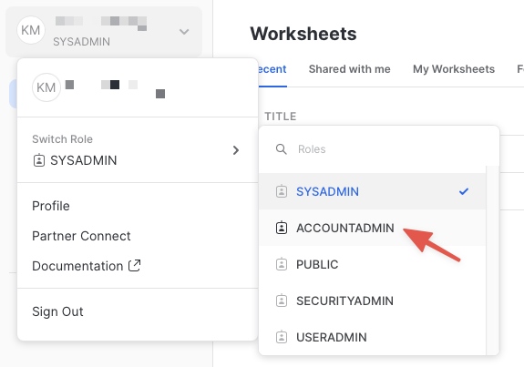
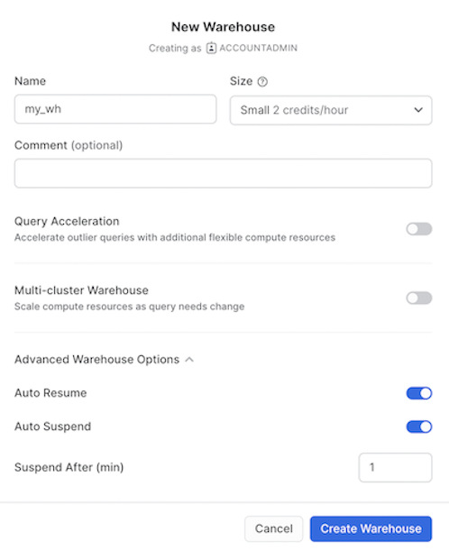
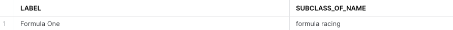
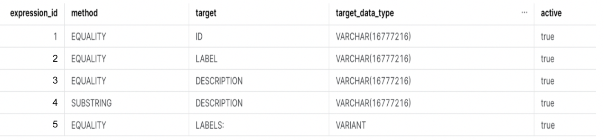
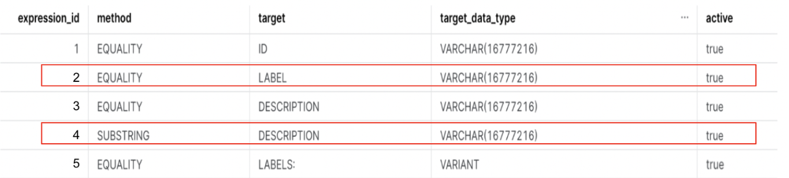
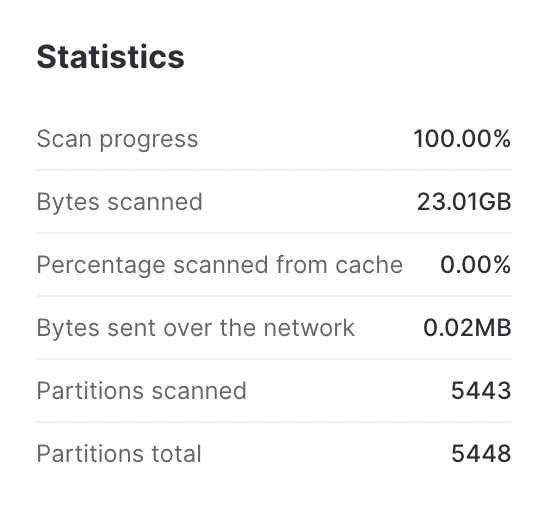
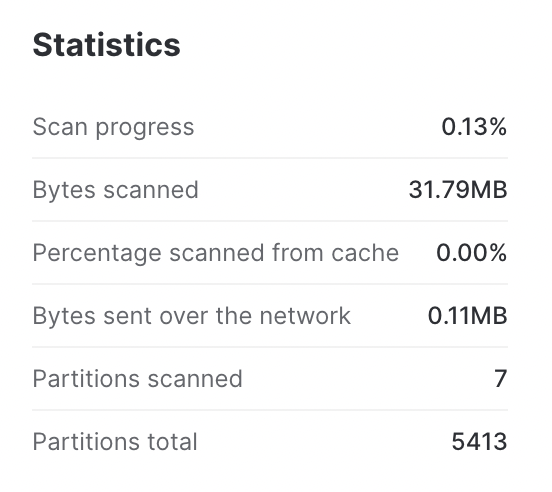
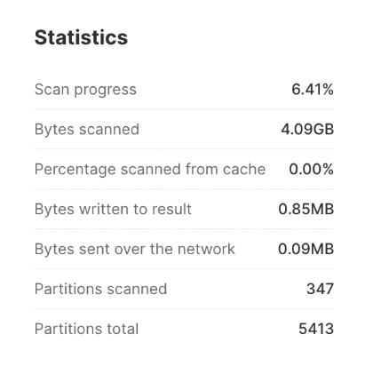
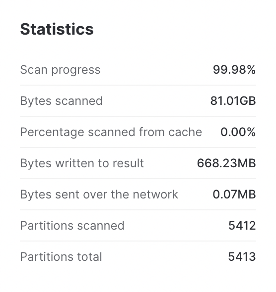

Are you looking to significantly improve the performance of point lookup queries and certain analytical queries that require fast access to records? Search Optimization Service will help you achieve exactly that.
We create optimized search access paths for the columns in your tables. We take advantage of those optimized paths in addition to other processing enhancements to reduce the number of micro partitions scanned and hence speed up the queries.
For example, in the picture below, we have a query that is trying to find all rows where the name is Martin in a table. If Search Optimization is enabled, it helps identify the micro partitions that don't contain ‘Martin' in the name column and reduces the number of partitions to be scanned. In this particular example, it reduces the number of partitions to be scanned from 15 to 1.
A basic knowledge of how to run and monitor queries in the Snowflake Web UI.
ACCOUNTADMIN role or the IMPORT SHARE privilegePerformant queries that explore the data from wikidata datasource. Wikidata is a free, collaborative, multilingual knowledge graph. It is a document-oriented database, focused on items, which represent any kind of topic, concept, or object. More information can be found at https://en.wikipedia.org/wiki/Wikidata
Negative: The Marketplace data used in this guide changes from time-to-time, and your query results may be slightly different than indicated in this guide. Additionally, the Snowflake UI changes periodically as well, and instructions/screenshots may be out of date.
The first step in the guide is to set up or log into Snowflake and set up a virtual warehouse if necessary.
If this is the first time you are logging into the Snowflake UI, you will be prompted to enter your account name or account URL that you were given when you acquired a trial. The account URL contains your account name and potentially the region. Click Sign-in and you will be prompted for your user name and password.
If this is not the first time you are logging into the Snowflake UI, you should see a Select an account to sign into prompt and a button for your account name listed below it. Click the account you wish to access and you will be prompted for your user name and password (or another authentication mechanism).
The Snowflake web interface has a lot to offer, but for now, switch your current role from the default SYSADMIN to ACCOUNTADMIN.

This will allow you to create shared databases from Snowflake Marketplace listings. If you don't have the ACCOUNTADMIN role, switch to a role with IMPORT SHARE privileges instead.
If you don't already have access to a Virtual Warehouse to run queries, you will need to create one.

Be sure to change the Suspend After (min) field to 1 min to avoid wasting compute credits.
If you already have access to a Virtual Warehouse to run queries, make sure to scale it up or down to Small Warehouse for this guide.
The next step is to acquire data that has all data types supported by Search Optimization. The best place to acquire this data is the Snowflake Marketplace.
Marketplace screen using the menu on the left side of the windowWikidata in the search barUtil Wikidata tileOn the Get Data screen, you may be prompted to complete your user profile if you have not done so before. Enter your name and email address into the profile screen and click the blue Save button. You will be returned to the Get Data screen.
Congratulations! You have just created a shared database named WIKIDATA from a listing on the Snowflake Marketplace. Click the big blue Query Data button and advance to the next step in the guide.
The prior section opened a worksheet editor in the new Snowflake UI with a few pre-populated queries that came from the sample queries defined in the Marketplace listing. You are not going to run any of these queries in this guide, but you are welcome to run them later.
You are going to first copy over two of the tables from WIKIDATA (the database that you just imported) into a new database (we will call it WIKI_SO).
This is necessary as
WIKIDATA databaseWIKI_SO database) and non search optimized tables (in WIKIDATA database) to compare the performance of Search Optimization.The first table we will use is wikidata_original, it has information about the wikidata articles such as description, label etc. There are 96.9 million rows in this table.
The second table is entity_is_subclass_of, which contains the information about subclass categories like subclass id and subclass name. It is a smaller table and has ~3.3 million rows.
To further understand the relationship between these two tables, consider the following query, where we are exploring an entity with Id Q1968 (which is a Formula One article)
SELECT o.label, e.subclass_of_name
FROM
entity_is_subclass_of as e
JOIN wikidata_original as o
ON e.entity_id = o.id
WHERE
e.entity_id = 'Q1968'; -- Formula One article
The result looks like this:

So, Id Q1968 is an article about Formula One (LABEL) and this entity rightly belongs to the subclass Formula Racing (SUBCLASS_OF_NAME).
Now let's copy over the above two tables into a new database before we enable Search Optimization on them.
Before we run the queries to do so, let's create a new worksheet named Search Optimization Guide by clicking the + icon on the left navigation bar. Throughout this guide, we will run the queries on the search optimized tables in the Search Optimization Guide worksheet.
Run the query below in the Search Optimization Guide worksheet:
CREATE DATABASE wiki_so;
CREATE SCHEMA experiments;
//Note: Substitute my_wh with your warehouse name if different
ALTER WAREHOUSE my_wh set warehouse_size='4x-large';
//This query will run in ~90 seconds.
CREATE TABLE wiki_so.experiments.wikidata_original AS (SELECT * FROM wikidata.wikidata.wikidata_original);
//This query will run in ~7 seconds.
CREATE TABLE wiki_so.experiments.entity_is_subclass_of AS (SELECT * FROM wikidata.wikidata.entity_is_subclass_of);
//Note: Substitute my_wh with your warehouse name if different
ALTER WAREHOUSE my_wh set warehouse_size='small';
Now let's enable Search Optimization for the wikidata_original table in the newly created WIKI_SO Database (Search Optimization Guide Worksheet). We can either enable Search Optimization on the whole table or enable it for a few columns depending on the queries we want to accelerate.
For this guide, let's selectively enable Search optimization for a few columns:
// Defining Search Optimization on VARCHAR fields
ALTER TABLE wikidata_original ADD SEARCH OPTIMIZATION ON EQUALITY(id, label, description);
// Defining Search Optimization on VARCHAR fields optimized for Wildcard search
ALTER TABLE wikidata_original ADD SEARCH OPTIMIZATION ON SUBSTRING(description);
// Defining Search Optimization on VARIANT field
ALTER TABLE wikidata_original ADD SEARCH OPTIMIZATION ON EQUALITY(labels);
Now, let's verify that Search Optimization is enabled and the backend process has finished indexing our data. It will take about 2 minutes for that to happen as the optimized search access paths are being built for these columns by Snowflake.
Run the below query against the newly created database (WIKI_SO)
DESCRIBE SEARCH OPTIMIZATION ON wikidata_original;
It would return a result like below:

Make sure that all the rows have the active column set to true before proceeding further in this guide.
Now you are all set up to run some queries and dive deep into Search Optimization.
We have intentionally enabled Search Optimization for wikidata_original table and not entity_is_subclass_of table for this guide.
NOTE: Please note that the results, query time, partitions or bytes scanned might differ when you run the queries in comparison to the values noted below as the data gets refreshed monthly in the above two tables.
Now let's build some queries and observe how Search Optimization helps optimize them.
To start off, we have already enabled Search Optimization on the LABEL and DESCRIPTION fields for equality and substring predicates respectively in the previous section.

NOTE:
If you wish to run the queries below on both databases (WIKIDATA and WIKI_SO) to evaluate performance impact, please make sure to run the commands below before you switch from one database to another. This will ensure that no cached results (hot or warm) are used.
ALTER SESSION SET USE_CACHED_RESULT = false;
ALTER WAREHOUSE my_wh SUSPEND;
Now, let's say you want to find all the articles about the iPhone which have the words wikimedia or page in the description (in that order). The query would look like:
SELECT *
FROM wikidata_original
WHERE
label= 'iPhone' AND
description ILIKE '%wikimedia%page%';
Without search optimization | With Search Optimization |
It takes 28 seconds to run the query on the table without search optimization. the other interesting aspect is, almost all partitions need to be scanned. also you will note that ~23.01GB data is scanned. Following are the full statistics  | On the other hand, the query takes 5.7 seconds on the search optimized table. you will notice that only 7 partitions of the total 5413 partitions are scanned. in addition only 31.79MB of the data needs to be scanned. |
Looking at the numbers side by side, we know that Search Optimization has definitely improved the query performance.
Without Search Optimization | With Search Optimization | Performance Impact | |
Query run time | 28 seconds | 5.7 seconds | 79.64% improvement in query speed |
Percentage of partitions scanned | 99.91% | 0.13% | 99.78% less partitions scanned |
Bytes scanned | 23.01GB | 31.79MB | 99.86% less data scanned |
Let's look at another example. Say, you want to find all articles which have the words blog post in their description, following would be the query to do so:
SELECT *
FROM wikidata_original
WHERE
description ILIKE '%blog post%';
Without search optimization | With Search Optimization |
The query runs for 23 seconds and ALL partitions are scanned. Also, 10.60GB of data is scanned. See the picture below for full details. | On the other hand, the query runs in 8.7 seconds on the Search Optimized table. You'll also notice that only 347 partitions of the total 5413 partitions are scanned. In addition 4.09GB of the data was scanned. See the picture below for full details. |
As you can see from the
Performance Impact
column above, using Search Optimization allows us to make significant improvements in query performance.
Without Search Optimization | With Search Optimization | Performance Impact | |
Query run time | 23 seconds | 8.7 seconds | 62.17% improvement in query speed |
Percentage of partitions scanned | 100% | 6.41% | 99.59% less partitions scanned |
Bytes scanned | 10.60GB | 4.09GB | 61.42% less data scanned |
Want to learn more? You can refer to our external documentations for benefitting from Search Optimization for queries with Equality Predicates and Wildcards
In this section, let's search in the variant data and analyze how Search Optimization helps in these cases.
NOTE:
If you wish to run the queries below on both databases (WIKIDATA and WIKI_SO) to evaluate performance impact, please make sure to run the commands below before you switch from one database to another. This will ensure that no cached results (hot or warm) are used.
ALTER SESSION SET USE_CACHED_RESULT = false;
ALTER WAREHOUSE my_wh SUSPEND;
To start off, we have already enabled Search Optimization on the Labels field which is an unstructured JSON.
Let's say you want to find all entries where the label is set to National Doughnut Day in the English version of the article. To do so, you can run the following query:
SELECT *
FROM wikidata_original
WHERE labels:en:value = 'National Doughnut Day';
The above query returns 2 rows out of 96.9 million rows.
Without search optimization | With Search Optimization |
The query runs for 42 seconds on the shared database. You will also see that ALL partitions need to be scanned. In addition, ~83.38GB of data was scanned. | On the other hand, it takes 5.2 seconds to run the same query on the search optimized table. You will also notice that only 5 partitions of the total 5413 partitions are scanned. In addition only 94.25MB of the data was scanned. |
From the
Performance Impact
column below, we see that using Search Optimization allows us to make significant improvements in query performance
Without Search Optimization | With Search Optimization | Performance Impact | |
Query run time | 42 seconds | 5.2 seconds | 87.62% improvement in query speed |
Percentage of partitions scanned | 100% | 0.09% | 99.91% less partitions scanned |
Bytes scanned | 83.38GB | 94.35MB | 99.80% less data scanned |
Want to learn more? You can refer to our external documentations for benefitting from Search Optimization for queries on Variant Data
The search optimization service can improve the performance of queries that join a small table with a large table.
NOTE:
In data warehousing, the large table is often referred to as the fact table. The small table is referred to as the dimension table. The rest of this topic uses these terms when referring to the large table and the small table in the join.
To enable the search optimization service to improve the performance of joins, you need to add Search Optimization to the fact table (the larger of the two tables). In addition, the dimension table (the smaller of the two tables) should have few distinct values. In our guide, wikidata_original is the fact table whereas entity_is_subclass_of is the dimension table.
Let's say you want to find out the Subclass ID of all articles related to ‘Formula One'. Say we know the following entity ids in the wikidata_original table mapping to ‘Formula One' articles are => 'Q1437617','Q8564669','Q1968' and 'Q5470299'
So, the query to find the ‘Formula One' subclass Ids would look like below:
SELECT *
FROM entity_is_subclass_of AS e
JOIN wikidata_original AS o ON (e.subclass_of_name = o.label)
WHERE e.entity_id IN ('Q1437617','Q8564669','Q1968','Q5470299') ;
NOTE:
If you wish to run the queries below on both databases (WIKIDATA and WIKI_SO) to evaluate performance impact, please make sure to run the commands below before you switch from one database to another. This will ensure that no cached results (hot or warm) are used.
ALTER SESSION SET USE_CACHED_RESULT = false;
ALTER WAREHOUSE my_wh SUSPEND;
Without search optimization | With Search Optimization |
It takes ~43 seconds and scans nearly ALL partitions and about 64.64GB of data to find the resulting Subclass ID. See the picture below for full details. | On the other hand, the query on the search optimized table, returns the result (subclass_of_id => Q1199515) in 4.4 seconds. Also, only a small portion of data is scanned to find the answer (12 partitions and 99.30MB of data is scanned). |
If we compare the statistics side by side, we can observe that Search Optimization greatly optimized the JOIN query.
Without Search Optimization | With Search Optimization | Performance Impact | |
Query run time | 43 seconds | 4.4 seconds | 92.09% improvement in query speed |
Percentage of partitions scanned | 99.92% | 0.22% | 99.70% less partitions scanned |
Bytes scanned | 62.64GB | 99.30MB | 99.84% less data scanned |
Want to learn more? You can refer to our external documentations for benefitting from Search Optimization for JOIN queries
Not all queries benefit from Search Optimization. One such example is the following query to get all entries that have description with the words wikimedia and page in that order. The query would look like:
SELECT *
FROM WIKIDATA_ORIGINAL
WHERE description ILIKE '%wikimedia%page%';
The following query returns 1.4 Million rows. As shown in the snapshot below, only 1 out of the 5413 partitions is skipped when you run the query on the search optimized wikimedia_original table in our newly created WIKI_SO database .

Such queries aren't benefitted from Search Optimization as the number of partitions that can be skipped by Search Optimization Service are very minimal.
In this guide, we have covered how to acquire a shared database from Snowflake Marketplace, how to enable Search Optimization on specific columns and analyze the performance improvements in queries with Search Optimization enabled.
You are now ready to explore the larger world of Snowflake Search Optimizaitn Service